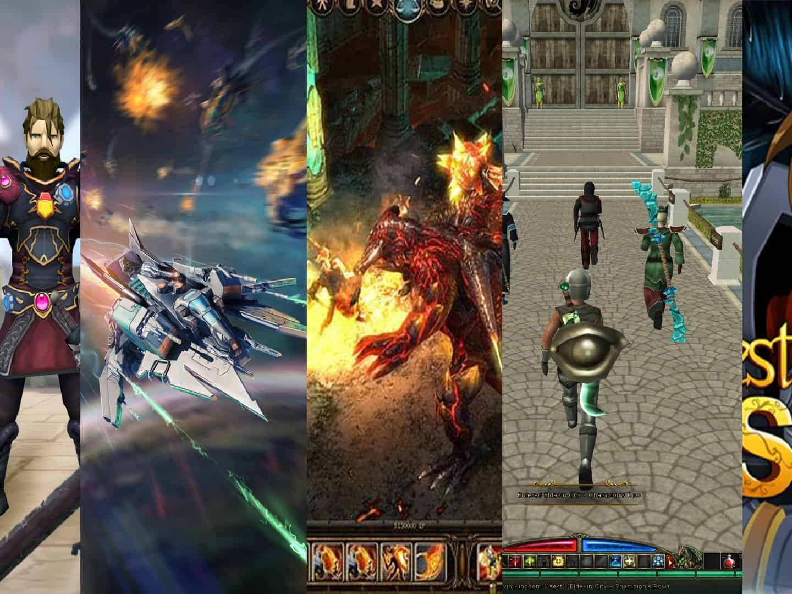

MMORPG ARENA

Popular MMORPG Arena Games

Black Desert Online
Black Desert Online is a visually striking and action-packed
MMORPG widely recognized for its real-time, fast-paced combat
system that emphasizes manual aiming, dodging, and combo
execution, giving it a more hands-on, skill-based feel compared to
traditional tab-target MMORPGs. One of the game’s biggest draws is
its incredibly deep character customization system, which allows
players to fine-tune nearly every facial and body feature, setting
a high standard for visual personalization in the genre.
Game Mechanics:
Black Desert Online features real-time action combat that relies
heavily on player skill, timing, and precision rather than
traditional tab-targeting systems. Players execute combos by
chaining together movement keys and mouse buttons, with attacks
feeling fast, fluid, and responsive. I-frame dodges and block
mechanics play a vital role, requiring players to master
positioning and reactions to outplay opponents. PvP becomes more
intricate with the need for gear optimization, where players
enhance their equipment specifically for PvP scenarios, making
gear progression and enhancement a critical part of competitive
play.
Featured Heroes:

Warrior
A well-balanced melee fighter excelling in defense and sword-and-shield combat

Sorceress
Combines dark magic and agile evasion for burst damage and tricky mobility.

Ninja
Uses stealth, swift attacks, and deadly precision to eliminate enemies quickly in PvP.
Game Tournaments:
Black Desert Online hosts several competitive PvP tournaments
that showcase the game's intense real-time combat mechanics.
One of the most notable is the Arena of Arsha, which features
both Class Championships—where players compete against others
using the same class—and Team Tournaments that emphasize group
strategy and synergy. Additionally, special PvP showcases such
as the Black Desert Heidel Ball events often highlight
high-level duels and matches during community celebrations.

World of Warcraft
World of Warcraft (WoW) is a long-standing high-fantasy MMORPG
that features a vast open world set in the realm of Azeroth, where
players create unique characters from various races and classes,
progressing through questlines, large-scale dungeons, and epic
raids. One of its most competitive formats is the Arena, where
players form teams, typically 2v2 or 3v3—and battle against others
in short, intense matches. This mode is built around team synergy,
class balance, strategic use of abilities, and managing cooldowns,
requiring both individual skill and deep coordination.
Game Mechanics:
In World of Warcraft, combat is class-based, meaning players
choose a class (like Mage, Warrior, or Rogue) and gain access to
a set of abilities unique to that role. The game uses a cooldown
system, where abilities can only be used after a certain time,
encouraging strategic timing and rotation usage. Trinkets and
gear with PvP-specific effects add another layer to strategic
depth, allowing players to survive longer or turn the tide of
battle.
Featured Heroes:

Paladin
A holy warrior who blends melee combat with healing and protective spells.

Mage
A powerful spellcaster specializing in elemental magic and crowd control.

Rogue
A stealthy assassin known for burst damage, poisons, and evasive maneuvers.
Game Tournaments:
World of Warcraft features a structured competitive PvP scene
through the Arena World Championship (AWC), which focuses on
high-level 3v3 arena battles. Successful teams advance to the
AWC Circuit, a multi-week round-robin competition that
determines who will move on to the prestigious Global Finals.
Additionally, World of Warcraft has historically featured
exhibition matches at BlizzCon, offering fans a chance to
witness elite-level play and showcase matches between
legendary players and teams.

Old School RuneScape – Deadman Mode
Old School RuneScape is a retro-style sandbox MMORPG that allows
players to freely explore a vast fantasy world while developing a
wide range of skills such as combat, fishing, crafting, and more.
Deadman Mode is a special seasonal variant of the game that
significantly intensifies the PvP experience by introducing
full-loot mechanics, where defeated players drop most of their
valuable items. It also includes permadeath stakes, meaning that
players who die too often may lose access to the tournament phase
entirely, raising the tension and importance of every encounter.
With limited safe zones, high rewards, and a focus on survival,
Deadman Mode transforms the typically casual, skill-focused
RuneScape gameplay into a high-stakes, cutthroat competition that
appeals to the most hardcore PvP fans.
Game Mechanics:
Deadman Mode in Old School RuneScape is a high-stakes PvP
variation of the core game, combining its traditional
point-and-click combat and skilling mechanics with a risk-heavy
twist. The game’s combat relies on timing attacks, switching
between weapons, and consuming food or potions at the right
moment, making it more about tactical decisions than real-time
reflexes. What makes Deadman Mode unique is its full-loot PvP
system—if you’re killed, your items can be looted by other
players, and in some rule sets, permadeath (permanent character
loss) applies after certain stages, creating a tense and
competitive environment where survival is just as important as
progression.
Game Tournaments:
Old School RuneScape hosts a variety of high-stakes PvP
tournaments, with the Deadman Mode Finals being the most
iconic—bringing together top players for intense, full-loot
battles in a permadeath environment. Special editions like
Deadman Apocalypse (2023) and Deadman Reborn introduced new
twists to the format, such as evolving safe zones and modified
combat rules to keep the competition fresh and unpredictable.
Beyond Deadman, PvP Championship Events and Seasonal Specials
continue to highlight the game's competitive edge, while
community-driven tournaments like the Clan Cup, supported by
Jagex, showcase the strength of player-organized PvP scenes.